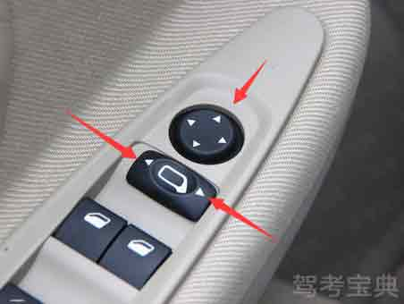
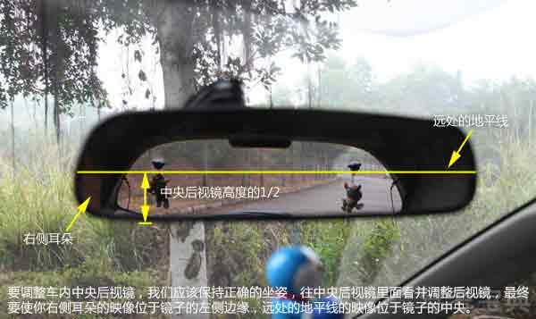
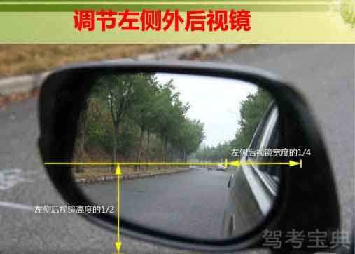
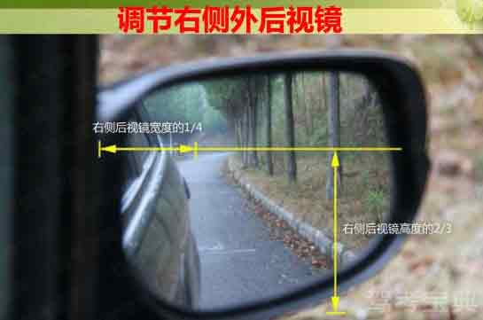

-
1. 首先调整好座椅、方向盘，位置适中后再调整后视镜。
-
2. 长方形按钮可选择左右后视镜，推到左边选择左后视镜，推到右边控制右后视镜圆形按钮控制后视镜角度。先按指向左右的按钮调节左右，再按指向上下的按钮调节上下。
 -
3. 对于中央内后视镜，我们要把中央后视镜里面的地平线映像调节至镜子中央，把你的右侧耳朵的映像调节至镜子左侧边缘。
 -
4. 对于左侧外后视镜，我们要把后视镜里面的地平线映像调节至镜子中央，把左侧车身的映像调节至占据镜子右侧1/4的区域。对于右侧外后视镜，我们要把后视镜里面的地平线映像调节至位于镜子高度的2/3处，把右侧车身的映像调节至占据镜子左侧1/4的区域。
